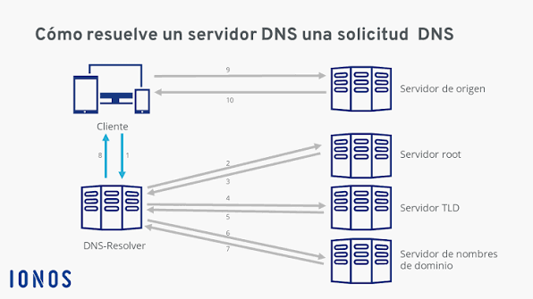
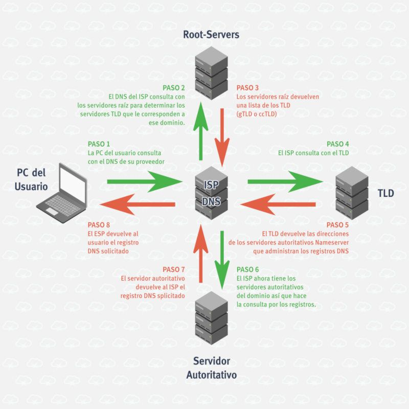

SERVIDOR DNS
A diferencia de los humanos, las máquinas para comunicarse en la web,
usan las direcciones IP, como humanos es difícil memorizar cada una de ellas,
para eso existen los servidores DNS, los servidores DNS (sistema de nombres de dominio)
traducen los nombres de host de dominio legibles que utilizan los humanos,
como www.companywebsite.com, en direcciones IP que pueden leer las máquinas.
Los servidores DNS son esenciales para garantizar una experiencia de navegación
positiva, así como conexiones rápidas y fiables a través de Internet a los sitios
web, las API y el software de las aplicaciones empresariales alojadas en la nube.

Todos los equipos con Internet, desde su teléfono inteligente o portátil pueden acceder
a los servidores con contenido como los sitios web, se buscan y comunican entre sí mediante
el uso de números, estos números se conocen como direcciones IP, cuando abre un navegador web
y visita un sitio, no necesita recordar e ingresar un número largo, en su lugar, puedes
introducir un nombre de dominio como example.com y aun así terminar en el lugar correcto.
Funcionamiento
En una consulta DNS típica sin ningún tipo de almacenamiento en caché, hay
cuatro servidores que trabajan en conjunto para entregar una dirección IP al
cliente.
Tipos de servidores
Para que la red de servidores DNS pueda funcionar es necesario repartir el trabajo en a 4 tipos de
servidores, a continuación, los tipos de servidores DNS.

Cache DNS
Hay varios tipos de almacenamiento en caché en el DNS, cada vez que un usuario o un equipo inicia una solicitud de DNS,
la respuesta se puede almacenar en la memoria temporal o caché del sistema operativo y del navegador del usuario, o en
cualquiera de los servidores recursivos implicados en la búsqueda, cada registro de DNS tiene un valor de periodo de vida
(TTL) que determina durante cuánto tiempo se pueden almacenar los registros en una caché antes de eliminarlos, lo que hace
que los servidores y los sistemas operativos busquen un registro actualizado.
Cuando un usuario o un equipo inicia una consulta de DNS, el dispositivo del usuario comprueba primero la caché local del
sistema operativo o del navegador para ver si el registro ya existe allí, de lo contrario, reenvía la solicitud a un servidor
DNS recursivo, el servidor recursivo resuelve la solicitud basándose en la información almacenada en su propia caché o la reenvía
a otros servidores de nombres y, en última instancia, a un servidor DNS autoritativo, la respuesta del servidor DNS
autoritativo se almacena en la caché de cada paso de resolución y se reenvía al dispositivo del usuario, que carga la página
web correcta o se conecta al dispositivo correcto.